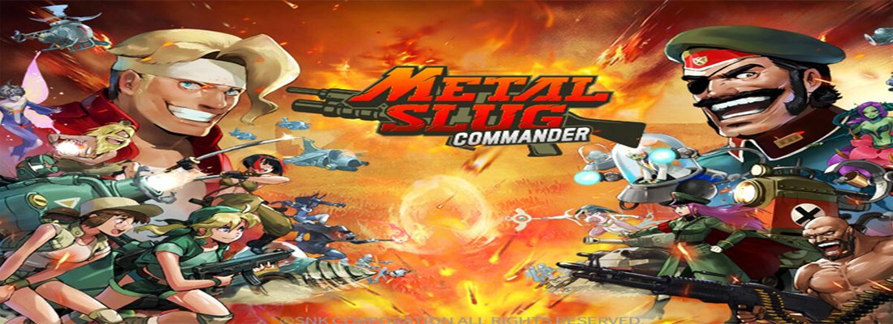
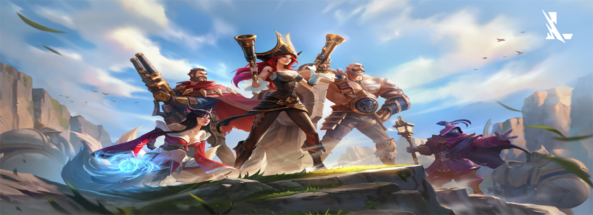

FIFA 22

Si bien FIFA es una gran saga de videojuegos, FIFA 22 es considerado como el sportgame más jugado de todos los tiempos con 89 millones de partidas al día, en más de 200 países durante sus primeros 22 días de lanzamiento, incluso llego a superar el record de descargas de Pokemon, sin embargo, eso no basto para que mundialmente su calificación fuera de solo tres estrellas de cinco. No es que el juego sea malo en sí, sino que se ha subido la dificultad, causando un enojo en las masas. FIFA 22 se la rompió estrenando más de 4000 animaciones en su entrega, y tomando un rumbo muy diferente a sus anteriores entregas.
Requisitos para pc
FIFA 22 está disponible en PS4, PS5, Xbox One, Xbox Series X|S y PC.
- Sistema operativo: Windows 10 de 64 bits
- Procesador (AMD): Athlon X4 880K de 4 GHz o equivalente
- Procesador (Intel): Core i3-6100 de 3,7 GHz o equivalente
- Memoria: 8 GB
- Tarjeta gráfica (AMD): Radeon HD 7850 o equivalente
- Tarjeta gráfica (NVIDIA): Ge Force GTX 660 o equivalente
- Requisitos de conexión a Internet: conexión a Internet de 512 KBPS o superior
- Espacio en el disco duro: 50 GB
Sitios de descarga
FIFA 22
Pac-Man y las Aventuras Fantasmales


Han pasado más de 40 años desde su creación y hasta la fecha nuestro amigo Amarillo sigue causando impacto, a tal grado que no importa si no lo jugaste de seguro habrás llegado a escuchar de nuestro amigo amarillo. Su jugabilidad es simple pero adictiva, que te brindara horas de diversión estando disponible de forma gratuita para pc y para Android.
Requisitos para pc
- Sistema Operativo: Windows XP, Vista, Seven, 8.
- Procesador: 2Ghz Dual Core o AMD equivalente.
- Memoria: 2 GB RAM.
- Tarjeta gráfica: 512MB video cards Pixel Shader 3.0.
- DirectX: Versión 9.0.
- Disco duro: 4 GB espacio disponible.
- Tarjeta de sonido: DirectX sound device.
Sitios de descarga
Tetris Ultimate


Otro juego de antaño en nuestro top, aunque no muchos hayan logrado entenderlo o poder jugarlo bien, tetris tenía la habilidad de tenerte ahí intentando una y otra vez juntando puntos. Actualmente tenemos muchas versiones del original y todas cuentan con la misma jugabilidad, probando que nunca pasara de moda, debido a que es gratuito tanto para pc como para celular.
Requisitos para pc
- SO: Windows 7 SP1, Windows 8/8.1, Windows 10 (32/64bit Version’s)
- Procesador: Intel Core 2 Duo E7300 @ 2.5 GHz o AMD Athlon II X2 240 @ 2.8 GHz.
- Memoria: 2 GB de RAM.
- Gráficos: NVIDIA Ge Force GTS450 o AMD Radeon HD5670.
Sitios de descarga
Space invaders

Space Invaders se ha convertido en uno de los iconos culturales más importantes en todo lo que se refiere al mundo de los videojuegos. Y un ejemplo incuestionable que refleja esta realidad tiene que ver con el sprite de los propios invaders, el cual se asocia en la actualidad de manera inequívoca con la cultura retro. Cuenta con versiones gratuitas gratuito tanto para pc como para celular.
Requisitos para pc
- Requiere un procesador y un sistema operativo de 64 bits.
- SO: Windows7/8.1/10 (64bit)
- Procesador: Intel(R) Core(TM) i5-2410M 2.30GHz.
- Memoria: 4 GB de RAM.
- Gráficos: 64MB.
- DirectX: Versión 11.
- Almacenamiento: 600 MB de espacio disponible.
- Tarjeta de sonido: DirectSound-compatible.
Sitios de descarga
Mario Kart 8 Deluxe


Si bien la primera vez que vimos a Mario y Luigi oficialmente fue en Super Mario Bros, el juego más vendido y jugado termino siendo Mario Kart en todas sus versiones, ya que este nos ponía a nuestro querido Mario en un nuevo ambiente que ya no se enfocaba solo en rescatar a la princesa, sino que nos presentaba la posibilidad de competir contra nuestros personajes favoritos, pertenecientes a la saga en una carrera llena de curvas, trucos, poderes y trampas. Mario Kart 8 Deluxe termina siendo el mejor de todas sus versiones debido a su jugabilidad y gráficos.
Requisitos para descarga
Al ser un juego oficial solo estará disponible si tienes un Nintendo Switch, y los emuladores para pc no son los mejores.
Minecraft


No hay juego en el mundo que se compare a Minecraft, debido a que este no te plantea una meta o una línea a seguir, eres tu quien decide como jugarlo, el juego nunca te pondrá limites en tu mundo, y todo puede convertirse en cualquier cosa el limite termina siendo tu imaginación. Desde su primera entrega hasta la fecha nunca dejo de estar en los más jugados ya que al paso de los años fue evolucionando.
Requisitos para pc
- CPU: Intel Pentium D o AMD Athlon 64 (K8) 2.6 GHz.
- RAM: 2GB.
- GPU (Integrada): Intel HD Graphics ó AMD (antes ATI) Radeon HD con OpenGL 2.1.
- Tarjeta gráfica: Nvidia Ge Force 9600 GT ó AMD Radeon HD 2400 con OpenGL 3.1.
- Disco duro: Al menos 200 MB libres.
- Java: Java 6 Release 45.
Sitios de descarga
Tekken


Desde que el juego dejo de ser un juego de arcade y paso a ser exclusivo para PlayStation, su popularidad ha crecido a lo largo de los años, ya que no solo era un juego de peleas, sino que después de cada pelea final se nos presentaba fragmentos de los personajes permitiéndonos empatizar con ciertos personajes causando que la audiencia se encariñara con ellos.
Requisitos para pc
- CPU: Intel Core i5-4690 3,5 GHz o equivalente.
- GPU: Ge Forcé GTX 1060, equivalente o superior.
- RAM: 8 GB.
- SO: Windows 7, Windows 8,1 o Windows 10 (versiones de 64-bits)
- HDD: 60GB de espacio libre.
- DirectX: Versión 11.
Sitios de descarga
Tekken
Metal Slug 2


Metal Slug es una saga clásica de los juegos de arcade, que llego a tener varias entregas, sin embargo, el más destacado fue su segunda entrega, en el que habría distintos añadidos que harían de la saga algo inigualable, podías enfrentar a las momias y convertirte en una, añadieron por primera vez el volverte gordo, montabas camellos, y los objetos que recogías cambiaban la forma en la que se desarrollaba.
Requisitos para pc
- SO: Windows Vista, 7, 8.
- Procesador: Pentium 4 2.4Ghz.
- Memoria: 1 GB de RAM.
- Gráficos: Intel HD Tarjeta gráfica.
- DirectX: Versión 9.0c.
- Almacenamiento: 500 MB de espacio disponible.
Sitios de descarga
League of Legends


League of Legends nació de un conflicto entre los creadores de dota 2 y la saga de Warcraft, lo cual sin querer termino causando la creación de dicho juego que copia la jugabilidad de dota 2, obviamente creando sus propios personajes, historia, ítems, etc. Aunque empezara con la fama de ser la copia de la copia, termino siendo mucho más popular que dota 2 teniendo mayor preferencia entre los usuarios, hasta la actualidad donde cuenta con su versión para pc y para celular.
Requisitos para pc
- Procesador: de 3 GHz (compatible con conjunto de instrucciones SSE2 o superior).
- Memoria RAM: de 2 GB.
- Espacio disponible en el disco duro: 12 GB como mínimo.
- Tarjeta gráfica: compatible con sombreador de píxeles 2.0b.
- Resolución de pantalla: de hasta 1920x1200.
Sitios de descarga
LoL
World of Warcraft
World of Warcraft nació como un intento desesperado de Blizzard Entertainment para tratar de competir con Dota, presentándole al usuario un mundo nuevo y mucho más grande que el que se había visto en Warcraft trono de hielo, expandiendo la historia y permitiéndole al jugador jugar en línea con sus amigos o avanzar solo. Fue una gran innovación sin embargo la jugabilidad no era la mejor ya que tenías que cargar con muchos ítems y casillas, por ello perdió muchos usuarios.
Requisitos para pc
- Sistema operativo: Windows® 7 / Windows® 8 64-bit actualizado con el último service pack.
- CPU: Intel® Core™ i5 2400, AMD FX™ 4100 o superior.
- Tarjeta gráfica: NVIDIA® GeForce® GTX 470, ATI Radeon™ HD 5870 o superior.
- Memoria: 4 GB.
- Disco Duro: 35 GB de espacio libre disponibles.
Sitios de descarga
World of Warcraft